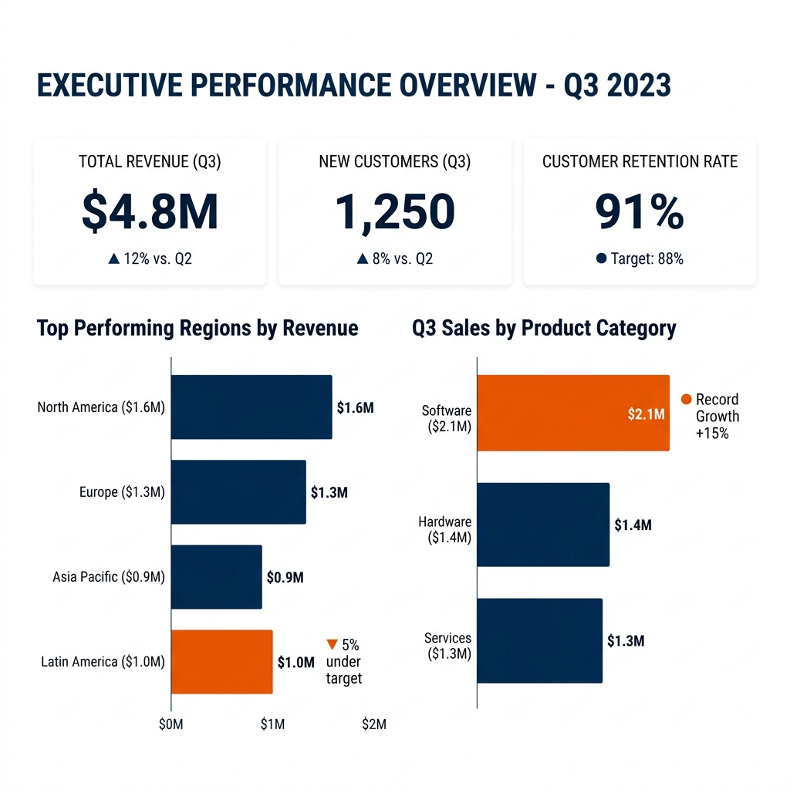

Inteligencia de Negocios
Clase 1: Evolución, Ecosistema y Diseño
Docente: Dudbil Olvasada Pabón Riaño
Universidad Autónoma de Bucaramanga
Hoja de Ruta
1. Acuerdos
Reglas, horarios y descansos cognitivos.
2. EMI Warm-Up
Vocabulario técnico y simulación en inglés.
3. Ecosistema BI
Bases de datos, ETL, Analítica e Insights.
4. Storytelling visual
Principios Gestalt, Decluttering y visualizaciones.
Ecosistema Analítico
Pro-Tip: El BI no es una herramienta aislada. Es un ecosistema vivo orientado a conectar el dato con la acción corporativa.
mindmap
root((Business Intelligence))
Analítica
Descriptiva
(¿Qué pasó?)
Predictiva
(¿Qué pasará?)
Prescriptiva
(¿Qué hacer?)
Tecnología
ETL
Data Warehouse
OLAP
Negocio
Toma de Decisiones
KPIs
Evolución de los Datos
timeline
title Hitos Históricos
1980s : Sistemas DSS : Reportes estáticos IT
1990s : Data Warehousing : OLAP y Minería de Datos
2000s : BI Tradicional : Dashboards Corporativos
2010s : Self-Service BI : Democratización del Dato
2020s : Augmented BI : IA Predictiva
Arquitectura Base (ETL y OLAP)
- Fuentes (OLTP): Datos crudos y transaccionales (Ej. Cajas registradoras, Excel). Optimizados para escritura.
- ETL: Extraer, Transformar y Cargar. El filtro crítico de limpieza de datos.
- Data Warehouse: Repositorio consolidado y confiable para lectura rápida (OLAP).
- Visualización: Consumo de insights mediante métricas accionables.
graph LR
A[(OLTP)] -->|Extracción| B(Limpieza / Transformación)
B -->|Carga| C[(Data Warehouse)]
C --> D{Dashboards}
style B fill:#E85C0B,stroke:#333,stroke-width:2px,color:#fff
style C fill:#003865,stroke:#333,stroke-width:2px,color:#fff
Storytelling
with Data
No se trata de graficar números. Se trata de contar una historia que obligue al negocio a tomar acción.
El Problema del "Clutter" Visual
Observa cómo la reducción de ruido y la Gestalt mejoran la comprensión.
El Objetivo: Interfaz Minimalista
Visualización libre de ruido visual, priorizando el dato y la toma de decisiones.

Taller: Pair Programming
Pro-Tip: Utilicen asistentes LLM como copilot crítico. Pregúntenles si el diseño del tablero evaluado cumple los lineamientos de *Storytelling with Data*.
Conclusiones
- El diseño de datos es estrategia organizacional, no solo estética.
- El 80% del esfuerzo reside en la ingeniería de datos (ETL); el 20% en la visualización.
- Si un dashboard no puede leerse en 5 segundos, ha fracasado en su propósito.
Bibliografía Requerida
- Nussbaumer Knaflic, C. (2015). Storytelling with Data: A Data Visualization Guide for Business Professionals. Wiley.
- Kimball, R., & Ross, M. (2013). The Data Warehouse Toolkit: The Definitive Guide to Dimensional Modeling. Wiley.
Lectura Autónoma: Revisen el Capítulo 1 y 2 de Storytelling with Data para la próxima clase. Aplicaremos los conceptos en el laboratorio.